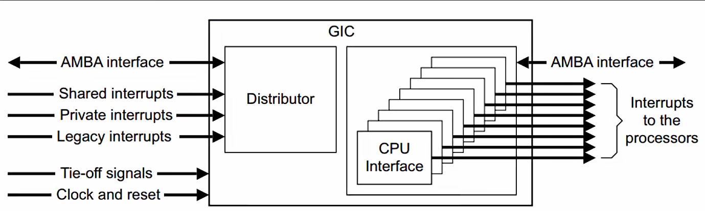
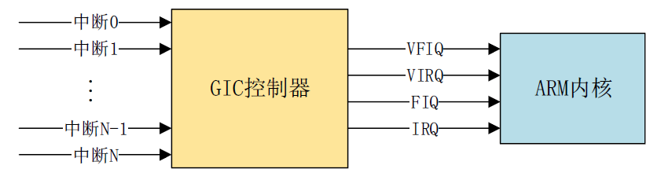
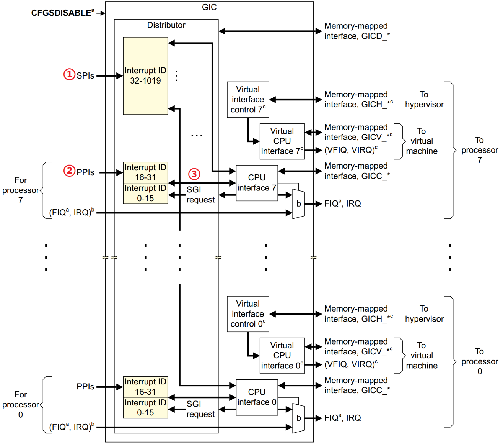
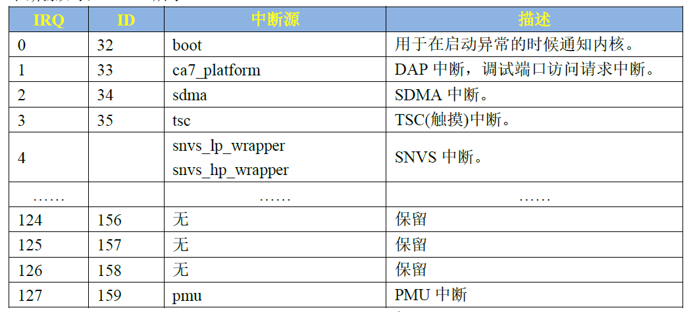
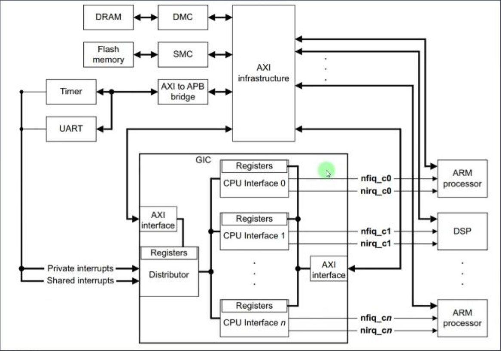
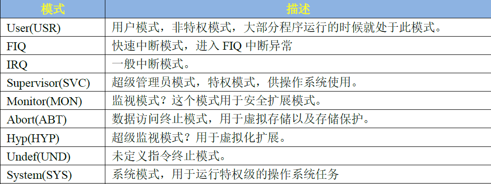
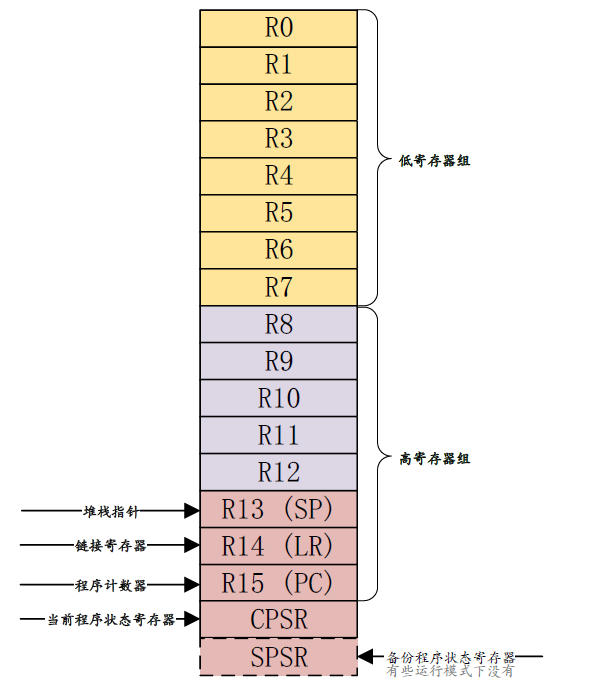
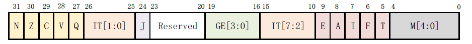

CH1-中断子系统介绍
中断子系统
中断
Linux中断是指在CPU正常运行期间，由于内外部事件或由程序预先安排的事件引起的CPU暂时停止正在运行的程序，转而为该内部或外部事件或预先安排的事件服务的程序中去，服务完毕后再返回去继续运行被暂时中断的程序。
中断子系统框架

CPU
中断控制器
外设
中断向量表
中断号
Linux内核中断子系统
中断编程接口（
request_irq接口函数）具体的外设驱动
中断控制器
GIC 是ARM 公司给Cortex-A/R 内核提供的一个中断控制器，类似Cortex-M 内核中的NVIC。GIC 接收众多的外部中断，然后对其进行处理，最终就只通过四个信号报给ARM 内核，这四个信号的含义如下：
- VFIQ:虚拟快速FIQ。
- VIRQ:虚拟外部IRQ。
- FIQ:快速中断IRQ。
- IRQ:外部中断IRQ。
上图中我们可以看到所有的中断都发送给了GIC控制器，它负责处理各种中断，判断优先级、屏蔽、使能等工作。在GIC控制器中有Distributor、Interface
**Distributor(分发器端)：**块负责处理各个中断事件的分发问题，也就是中断事件应该发送到哪个CPU Interface 上去.分发器收集所有的中断源，可以控制每个中断的优先级，它总是将优先级最高的中断事件发送到CPU 接口端
全局中断使能控制。
控制每一个中断的使能或者关闭。
设置每个中断的优先级。
设置每个中断的目标处理器列表。
设置每个外部中断的触发模式：电平触发或边沿触发。
设置每个中断属于组0 还是组1。
**CPU Interface(CPU 接口端)：**每个CPU Core 都可以在GIC 中找到一个与之对应的CPU Interface,CPU 接口端就是分发器和CPU Core 之间的桥梁
使能或者关闭发送到CPU Core 的中断请求信号。
应答中断。
通知中断处理完成。
设置优先级掩码，通过掩码来设置哪些中断不需要上报给CPU Core。
定义抢占策略。
当多个中断到来的时候，选择优先级最高的中断通知给CPU Core。
中断的分类

中断的种类可以分为：
SPI(Shared Peripheral Interrupt),共享外设中断，顾名思义，所有的核Core共享的中断，这个是最常见的，那些外部中断都属于SPI 中断(注意！不是SPI 总线那个中断) 。比如按键中断、串口中断等等，这些中断所有的Core 都可以处理，不限定特定CorePPI(Private Peripheral Interrupt)，私有外设中断，我们说了GIC 是支持多核的，每个核肯定有自己独有的中断。这些独有的中断肯定是要指定的核心处理，因此这些中断就叫做私有中断。SGI(Software-generated Interrupt)，软件中断，由软件触发引起的中断，通过向寄存器GICD_SGIR 写入数据来触发，系统会使用SGI 中断来完成多核之间的通信
ID (Hardware Interrupt ID) - 硬件中断号
中断源有很多，每一个CPU 最多支持1020 个中断ID，中断ID 号为ID0~ID1019。这1020 个ID 包含了PPI、SPI 和SGI。
ID0~ID15：这16 个ID 分配给SGI。ID16~ID31：这16 个ID 分配给PPI。ID32~ID1019：这988 个ID 分配给SPI，像GPIO 中断、串口中断等这些外部中断。I.MX6U 的总共使用了128 个中断ID，加上前面属于PPI 和SGI 的32 个ID，I.MX6U 的中断源共有128+32=160个。
《I.MX6ULL 参考手册》的3.2 小节可以查看I.MX6U 完整的中断源

IRQ (Linux Virtual Interrupt Number) - Linux 虚拟中断号
Linux 内核软件视角下的逻辑编号。它是一个由 Linux 内核分配和管理的软件概念，是驱动开发者请求和使用的“虚拟中断号”。当驱动调用 request_irq(irq, handler, ...) 来注册一个中断处理函数时，它使用的就是这个 irq 号。
| 特性 | IRQ (虚拟中断号) | ID (硬件中断号) |
|---|---|---|
| 视角 | Linux 内核软件视角 | 中断控制器硬件视角 |
| 用途 | 驱动开发者使用 | 硬件工程师、底层配置使用 |
| 稳定性 | 相对稳定，但可能随配置变化 | 绝对固定，由芯片决定 |
| 关系 | 通过 irq_domain 映射到 ID |
通过 irq_domain 被映射到 IRQ |
中断控制器处理中断的流程
GRC控制器结构:分为仲裁器和CPU接口两部分
中断的状态可以分为Inactive、Pending、Active、Active and Pending四种状态：
| 状态 | 含义 |
|---|---|
| Inactive | 中断未发生，或已被处理完成。 |
| Pending | 中断已发生，但尚未被 CPU 处理。 |
| Active | CPU 正在处理该中断。 |
| Active and Pending | CPU 正在处理该中断，但同一中断源又发出了新的中断。 |
中断发生（Inactive → Pending）
- 设备发出中断信号。
- 仲裁器将该中断状态设置为 Pending。
仲裁器选择中断（Pending → 发送给 CPU Interface）
- 仲裁器在所有 Pending 状态的中断中选择优先级最高的一个。
- 将其发送给目标 CPU 的 CPU Interface。
CPU Interface 判断是否转发给 CPU
- CPU Interface 会检查：
- 该中断的优先级是否高于当前 CPU 的屏蔽优先级（如优先级掩码寄存器）。
- 或者是否是 CPU 正在处理的中断（用于支持中断嵌套或抢占）。
- 如果条件满足，则向 CPU 发出中断信号（如 IRQ 或 FIQ）。
- CPU Interface 会检查：
CPU 响应中断（Pending → Active）
- CPU 检测到中断信号后，跳转到中断处理程序。
- CPU 通过读取中断应答寄存器（如
GICC_IAR）获取中断号。 - 读取后，该中断状态由 Pending 变为 Active。
中断处理中（Active）
- CPU 执行该中断对应的处理函数（ISR, Interrupt Service Routine）。
中断完成（Active → Inactive）
- CPU 处理完成后，写入中断结束寄存器（如
GICC_EOIR），通知控制器中断已完成。 - 控制器将该中断状态改为 Inactive。
- CPU 处理完成后，写入中断结束寄存器（如
Cortex-A
处理器运行模式

除了User(USR)用户模式以外，其它8 种运行模式都是特权模式，这几个运行模式可以通过软件进行任意切换，也可以通过中断或者异常来进行切换。
寄存器组
ARM 架构提供了16 个32位的通用寄存器(R0R15)**供软件使用，前15 个(R0R14)可以用作通用的数据存储，R15 是**程序计数器PC，用来保存将要执行的指令。
ARM 还提供了一个当前程序状态寄存器CPSR 和一个备份程序状态寄存器SPSR，SPSR 寄存器就是CPSR 寄存器的备份。

通用寄存器
R0~R15 就是通用寄存器，通用寄存器可以分为以下三类：
- 未备份寄存器，即R0~R7。
- 备份寄存器，即R8~R14。
- 程序计数器PC，即R15。
未备份寄存器
所有的处理器模式下这8 个寄存器都是同一个物理寄存器，在不同的模式下，这8 个寄存器中的数据就会被破坏。所以这8 个寄存器并没有被用作特殊用途。
备份寄存器
R8~R12这5个寄存器有两种物理寄存器- 快速中断模式下(FIQ)它们对应着Rx_irq(x=8
12) 物理寄存器，因为FIQ 模式下的`R8R12`是独立的，因此中断处理程序可以不用执行保存和恢复中断现场的指令，从而加速中断的执行过程。 - 其他模式下对应着Rx(8~12)物理寄存器。
- 快速中断模式下(FIQ)它们对应着Rx_irq(x=8
备份寄存器R13
R13也叫做SP，用来做为栈指针。其中一个是用户模式(User)和系统模式(Sys)共用的，剩下的7 个分别对应7种不同的模式。基本上每种模式都有一个自己的R13物理寄存器，应用程序会初始化R13，使其指向该模式专用的栈地址，这就是常说的初始化SP指针。
备份寄存器R14
R14 也称为连接寄存器(LR)，LR 寄存器在ARM 中主要用作如下两种用途：
每种处理器模式使用R14(LR)来存放当前子程序的返回地址如果使用BL或者BLX
来调用子函数的话，R14(LR)被设置成该子函数的返回地址，在子函数中，将R14(LR)中的值赋给R15(PC)即可完成子函数返回，比如在子程序中可以使用如下代码MOV PC, LR @寄存器LR 中的值赋值给PC，实现跳转1
2
3
4
- ```
PUSH {LR} @将LR 寄存器压栈----子函数的入口
POP {PC} @将上面压栈的LR 寄存器数据出栈给PC 寄存器，严格意义上来讲应该是将@LR-4 赋给PC-----子函数的最后面
异常模式对应的R14 寄存器被设置成该异常模式将要返回的地址
程序计数器R15
程序计数器R15也叫做PC
R15保存着当前执行的指令地址值加8个字节，原因是：ARM 处理器3 级流水线：取指->译码->执行，这三级流水线循环执行，比如当前正在执行第一条指令的同时也对第二条指令进行译码，第三条指令也同时被取出存放在R15(PC)中。
R15(PC)总是指向当前正在执行的指令地址再加上2条指令的地址。对于32 的ARM 处理器，每条指令是4个字节，所以:
1
R15 (PC)值 = 当前执行的程序位置 + 8 个字节。
状态寄存器
所有的处理器模式都共用一个CPSR 物理寄存器，CPSR 是当前程序状态寄存器，该寄存器包含了条件标志位、中断禁止位、当前处理器模式标志等一些状态位以及一些控制位。
除了User和Sys这两个模式以外，其他7个模式每个都配备了一个专用的物理状态寄存器，叫做SPSR(备份程序状态寄存器)，当特定的异常中断发生时，SPSR 寄存器用来保存当前程序状态寄存器(CPSR)的值，当异常退出以后可以用SPSR中保存的值来恢复CPSR。

1. 条件码标志位 (Condition Code Flags)
这些位由 ARM 指令（通常带有 S 后缀，如 ADDS）自动设置，用于决定条件指令（如 BGE, CMP）是否执行。
- N (Negative / Less Than) [31]: 结果为负时置 1。
- Z (Zero) [30]: 结果为零时置 1。
- C (Carry / Borrow / Extend) [29]: 对于加法，无符号溢出时置 1；对于减法，无符号借位时置 0。
- V (oVerflow) [28]: 有符号溢出时置 1。
2. 控制位 (Control Bits)
这些位用于控制 CPU 的核心行为。
I (IRQ disable) [7]: 置 1 表示禁用 IRQ 中断。这是中断处理中的关键位！
F (FIQ disable) [6]: 置 1 表示禁用 FIQ 中断。
T (Thumb) [5]: 置 1 表示 CPU 处于 Thumb 状态，执行 Thumb 指令；置 0 表示处于 ARM 状态。
M[4:0] (Mode bits): 这 5 位决定了 CPU 当前处于哪种工作模式，这是理解特权级和中断的又一关键！
模式 M[4:0] 用途 备注 User 10000 用户模式，运行普通应用程序 非特权模式，资源受限 FIQ 10001 快速中断模式，用于处理高速数据传输、DMA 等 特权模式 IRQ 10010 普通中断模式，用于处理普通硬件中断 特权模式 Supervisor 10011 监管模式，上电或软件中断 ( swi) 指令进入，Linux 内核态特权模式 Abort 10111 中止模式，在内存访问失败时进入 特权模式 Undef 11011 未定义模式，在遇到未知指令时进入 特权模式 System 11111 系统模式，一种特权级的用户模式，用于运行特权操作系统任务 特权模式
CPSR 在中断处理流程中的关键作用
- 中断发生前 (CPU 在 User 模式)
CPSR.M[4:0] = 10000(User 模式)CPSR.I = 0(IRQ 中断是使能的)
- 硬件自动响应中断
- 当一个 IRQ 中断被 CPU Interface 发送给 CPU 核心后，CPU 硬件会自动执行以下操作：
- 保存现场：将当前的
CPSR保存到SPSR_irq（IRQ 模式下的备份程序状态寄存器）中。 - 模式切换：修改
CPSR.M[4:0] = 10010，让 CPU 立即切换到 IRQ 模式。 - 禁用中断：自动置
CPSR.I = 1，禁用新的 IRQ 中断，防止中断嵌套（除非编写代码手动开启）。 - 切换执行流：将返回地址保存到
LR_irq，并跳转到中断异常向量表指定的 IRQ 处理函数。
- 保存现场：将当前的
- 当一个 IRQ 中断被 CPU Interface 发送给 CPU 核心后，CPU 硬件会自动执行以下操作：
- 中断处理中 (CPU 在 IRQ 模式)
- 此时，CPU 运行在特权模式下，可以访问所有系统资源。
CPSR.I = 1，所以在此期间发生的普通 IRQ 中断会被屏蔽，但 FIQ 通常不会被屏蔽，以实现高速处理。
- 中断处理完成，恢复现场
- 中断服务程序执行完毕后，需要返回到被中断的任务。
- 执行一条特殊的返回指令（如
subs pc, lr, #4），这条指令会：- 将之前保存在
SPSR_irq中的值自动写回CPSR。 - 这条指令同时将
pc指向被中断的指令地址，从而恢复执行。
- 将之前保存在
- 这一操作是原子性的，CPU 模式、中断屏蔽位（
I/F）、条件标志位等所有状态都瞬间恢复到了中断前的样子。
伪代码：
1 | // ===== 伪代码表示 ARM 中断处理流程 ===== |